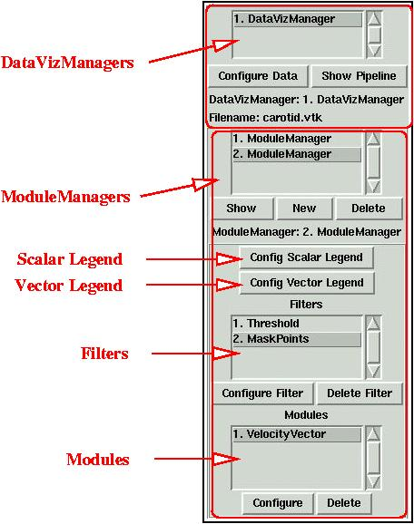

Table of Contents
This chapter describes in detail the way to use MayaVi for your data visualization.
It is important to understand the basic design of MayaVi before you use it. MayaVi is a data visualizer and the design reflects this. The basic design is simple and is described in this section.
The control panel needs to be understood before one can do anything serious with MayaVi. This section describes the control panel in some detail.
Associated with each data file that is to be visualized is an object
called a DataVizManager. This object is
responsible for the datafile and the entire visualization associated
with that data file. Each DataVizManager
instance is shown in the first list in the control panel.
Each DataVizManager controls a set of
ModuleManagers. These
ModuleManagers are listed in the second list
from the top.
Each ModuleManager controls set of two legends
(one for scalar visualization and one for vector visualization), a
collection of Filters and a collection of
Modules. Any number of Filters and Modules can
be used.
A Filter is an object that filters out the data
in some way or the other. A simple example is the
ExtractVectorNorm filter. This extracts the
magnitude of the selected vector data field attribute for the data
file. All modules that use this as an input will receive the vector
magnitude as the scalar field data. The filters can be chosen from
the menu. Each
ModuleManager can have as many filters as are required.
When multiple filters are used, it is important to note that each
filter sends its data to the next filter in sequence. This could be
problematic in some situations. Lets say there is a structured grid
object and that needs to be subsampled. We can use the
ExtractGrid filter and then display a
GridPlane. Now we want to show contours but
this time we want to threshold the contours based on input scalars so
we use the Threshold filter. If we put the
Threshold filter in the same ModuleManager, the
grid will disappear since the Threshold output
is an unstructured grid. So to handle this we create a new
ModuleManager (click the
button) and add the
Threshold filter in that
ModuleManager. Put all the modules that use
this filter in that ModuleManager.
A Module is an object that actually visualizes
the data. There are a large number of Modules that can be used and
these are also available from the menu.
Each ModuleManager can have as many modules as
are required.
Although the above sounds complex, it really is not. It may just take a little getting used to before you are completely comfortable with it. The following figure illustrates the above and clarifies matters.
|  |
The Control Panel
If you have multiple DataVizManagers and want
to see the ModuleManagers of one of them then
you either double click on the appropriate manager or single click on
the manager and click on the for
the DataVizManagers and on the
for the
ModuleManagers.
The other GUI buttons and features are all rather self explanatory. There are only a few points that need to be made in order to make this description complete:
The creation and deletion of a DataVizManager
is controlled via the menu. The open menu
items will create a new DataVizManager and the
menu item will close the selected
DataVizManager and all its
ModuleManagers. The menu item will close all the
DataVizManagers.
The addition and deletion of ModuleManagers,
can be done using the and
buttons in the control panel.
Filters and Modules can
be added from the menu and the
corresponding and
the sub menus. They can be deleted
from the control panel.
Filters and Modules can
be configured by either double clicking on the corresponding item or
by selecting the item and clicking on the
button.